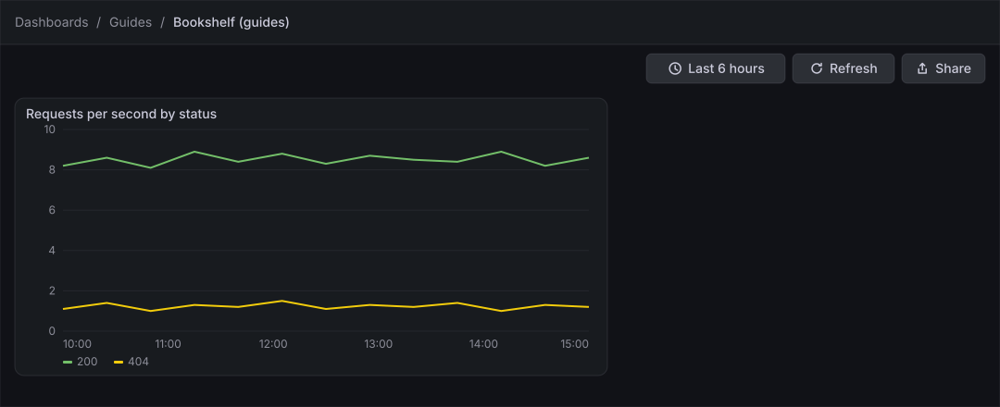
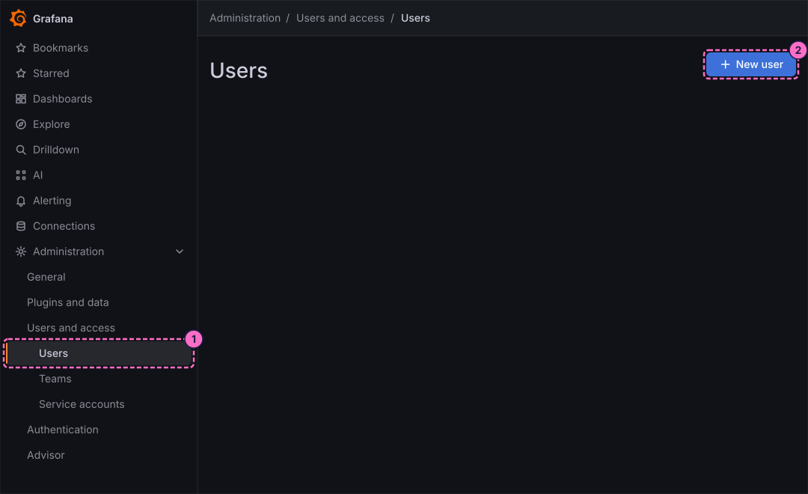
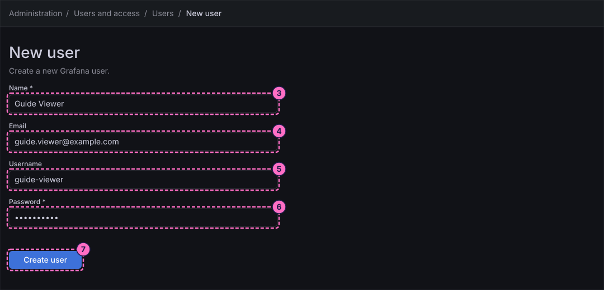
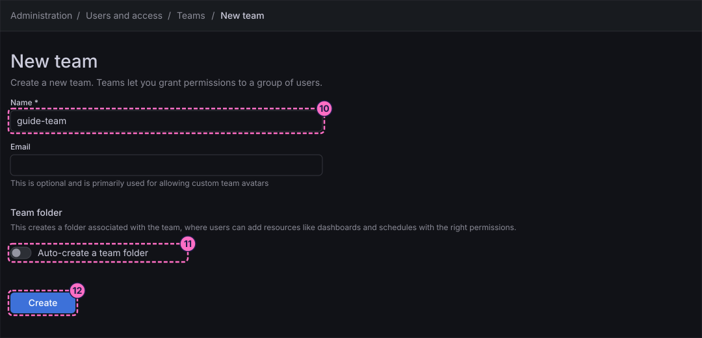
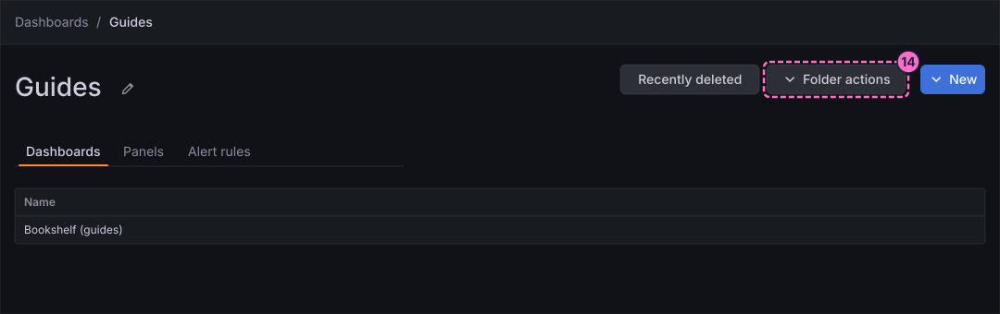
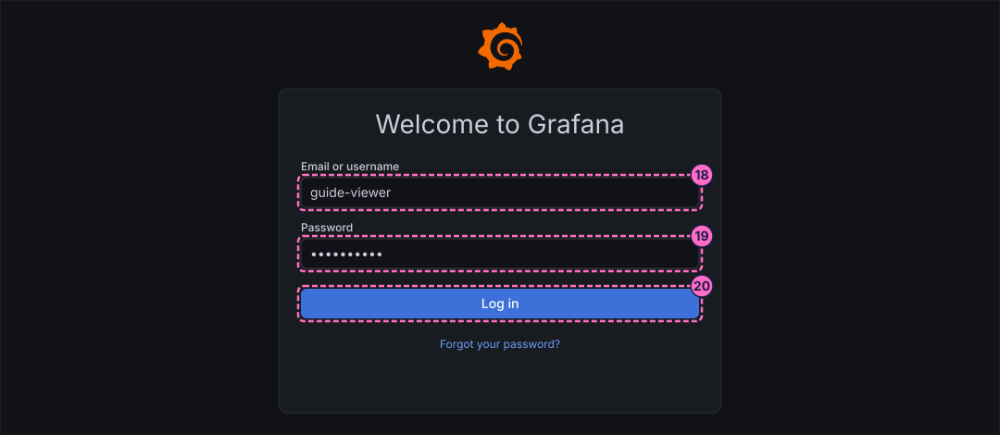
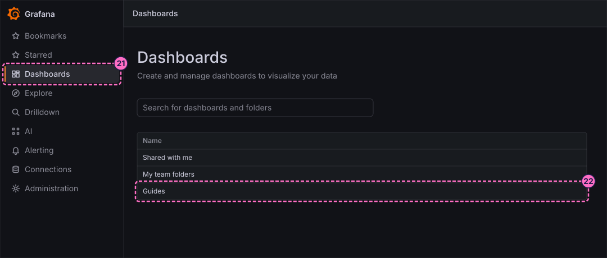
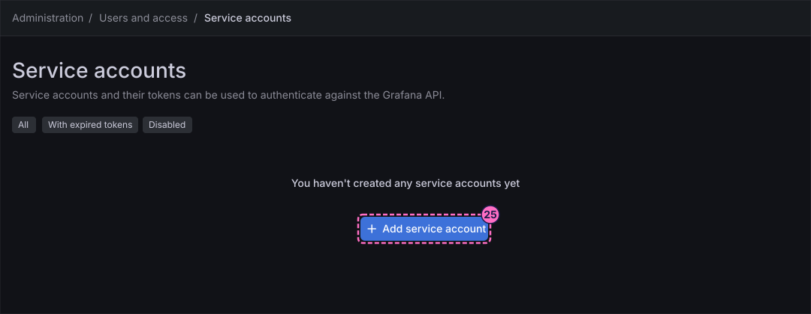

Grafana Guide: Users, Teams and Folder Permissions
|
This content was generated with the assistance of AI and should be verified against the official documentation before being relied on in production. |
Checked on 2026-11-11 against Grafana 13.3.x.
What you build
You create a user guide-viewer and a team guide-team, add the user to the team, and give the team the View permission on the folder Guides. You then sign in as the new user in a private window to see that it reaches the dashboard Bookshelf (guides) but cannot edit it. Finally you create a service account with a token and use the token against the Grafana HTTP API.

Before you start
-
Start the Grafana profile of the hands-on lab and wait about a minute:
cd lab docker compose --profile grafana up -d -
Open http://localhost:3000, sign in as
adminwith the passwordadmin, and click Skip when Grafana 13.3 asks you to update the default password.adminis a Grafana administrator and an organization administrator, which creating users, teams and service accounts requires. -
Do the earlier guides that create the folder Guides and the dashboard Bookshelf (guides): First steps in Grafana and Create a dashboard and the first panel. The previous guide is Silence, schedule and review alerts.
-
The lab runs without single sign-on, so a user created in the interface can sign in with a password. Choose a password of your own for the new user and remember it for step 19.
-
The guide was checked on Grafana Enterprise 13.3.0 (the free image, no licence key); the permission features used here are available without a licence.
-
The figures are drawings of the Grafana 13.3 user interface, not screenshots, so small details can differ from your screen. A highlighted box with a number marks the control of the step with the same number. The user page, the team page, the folder permissions dialog and the service account forms were not read in the lab, so those steps name the controls by their function and the figures do not draw them.
Steps
The guide works on three areas of the navigation: Administration → Users and access (Users, Teams and Service accounts), the folder page of Guides under Dashboards, and a private browser window for the check.
Create a user
-
In the left navigation, click Administration, then Users and access, then Users.
-
Click New user.

-
In Name, type
Guide Viewer. -
In Email, type
guide.viewer@example.com. -
In Username, type
guide-viewer. -
In Password, type a password of your own.
-
Click Create user.

-
On the page of the new user, change the role of the user in the organization to No basic role, so that it sees only what is granted to it. Without this change a user with the Viewer role can see every folder, and the check at the end would not show the effect of the team permission.
Create a team
-
In Administration → Users and access → Teams, click the button that creates a new team. The form is titled New team.
-
In Name, type
guide-team. -
Leave Auto-create a team folder switched off. The option creates a folder owned by the team; this guide grants access to the existing folder Guides instead.
-
Click Create.

-
On the page of the new team, add the user
guide-vieweras a member.
Give the team access to the folder
-
Open Dashboards, click the folder Guides and click Folder actions.

-
Choose the entry that opens the permissions of the folder. The entries of this menu were not read in the lab; look for the one named after permissions.
-
Add a permission for the team: choose Team, select
guide-team, choose the permission View and save it.
Check as the new user
-
Keep your own session as
adminand open a private (incognito) window of your browser at http://localhost:3000. -
In Email or username, type
guide-viewer. -
In Password, type the password you chose in step 6.
-
Click Log in.

-
In the left navigation, click Dashboards.
-
In the list, click the folder Guides. The folder bookshelf of the lab is not listed, because the user has no permission on it.

-
Open the dashboard Bookshelf (guides). It shows its panel, and the toolbar has no Edit button: the permission View allows reading, not changing.
Create a service account and a token
-
Back in your own window as
admin, open Administration → Users and access → Service accounts. -
Click Add service account.

-
In the form, type
guide-saas the display name and choose the role Viewer. -
Create the service account.
-
On its page, add a service account token with the button that generates a new token, and confirm.
-
Copy the token when it is shown: Grafana shows it only once.
-
Use the token against the HTTP API, replacing
<token>with the value you copied:curl -s -H "Authorization: Bearer <token>" "http://localhost:3000/api/search?query=Bookshelf"The answer is a JSON list that contains the dashboard Bookshelf (guides).
Check the result
-
Administration → Users and access → Users lists guide-viewer, and Teams lists guide-team with one member.
-
Signed in as
guide-viewer, you see the folder Guides, the dashboard Bookshelf (guides) in view mode and no Edit button. -
The
curlcommand with the token returns the dashboard; with a wrong token it answers401. -
Provoking traffic is not needed here. If you want live data in the panel, send
curl -X POST localhost:8090/mode/failingand restore it withcurl -X POST localhost:8090/mode/normal.
Variations
-
Give the team Edit instead of View on the folder, sign in again and compare: the Edit button appears.
-
Create the team with Auto-create a team folder switched on and see the folder under My team folders of the Dashboards page.
-
Give the user the role Viewer instead of No basic role and check that the folder bookshelf becomes visible too.
What can go wrong
| Symptom | Cause | Fix |
|---|---|---|
The new user sees the folder bookshelf and every other folder |
The user has the organization role Viewer, which includes read access to all folders. |
Change the role to No basic role on the user page, then sign in again. |
The new user sees no folder at all |
The user is not a member of |
Add the user to the team, and check the permissions of the folder Guides. |
The token is lost |
Grafana shows a service account token only once. |
Create a new token on the service account page and delete the old one. |
|
The token was copied with a trailing space, or the service account is disabled. |
Copy the token again, and check the filters Disabled and With expired tokens of the service accounts page. |
Clean up
Keep the user, the team and the service account if you want to explore further; none of them affects the lab dashboards. To remove them, delete the user, the team and the service account from their own pages
under Administration → Users and access, and remove the permission of the team from the folder Guides. To delete everything the lab stores, stop the profile with docker compose --profile grafana down -v.
Where to go next
-
Previous guide: Silence, schedule and review alerts.
-
This is the last guide of the Grafana series. Continue with the reference page Users, Teams and Permissions, which covers roles, role-based access control and authentication in full, and with the Grafana cheat sheet.